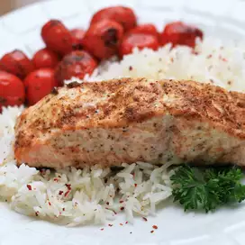

Baked Old Bay Salmon

A super easy way to cook salmon with Old Bay® seasoning.
The mayonnaise keeps the fish very tender
Ingredients:
- 1 serving cooking spray
- 1(2 pound) salmon fillet
- 2 tablespoons mayonnaise
- 2 tablespoons seafood seasoning(such as Old Bay)
Steps:
- Preheat the Oven to 350 degrees F (175 degrees C).Lne a large
baking sheet with aluminium foil and spray with cooking spray.
- Place salmon on the prepared baking sheet.
spread with mayonnaise and sprinkle with Old Bay seasoning.
-
Bake in preheated oven until fish flakes easily with
a fork, aout 20 minutes.
Home